1. Understand Box Model
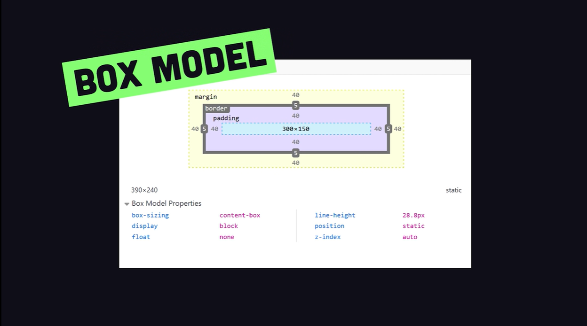
Using libraries like bootstrap or tailwind is a way to avoid learning CSS. They’re tools that can help you quickly build a nice-looking UI. However, it’s like getting married if you use something like tailwind in your project. First, you won’t learn CSS fundamentals; instead, you’ll learn tailwind. Second, if you change your mind, you’ll have to go through a very dreadful divorce.
You’ll have more control over your code, creativity, and flexibility once you learn basic CSS. Learning the CSS box model was the best piece of advice I didn’t get until much later in my web development. And once you grasp it, the rest of the language begins to make more sense. It’s actually very easy.
Consider each HTML element to be a box.
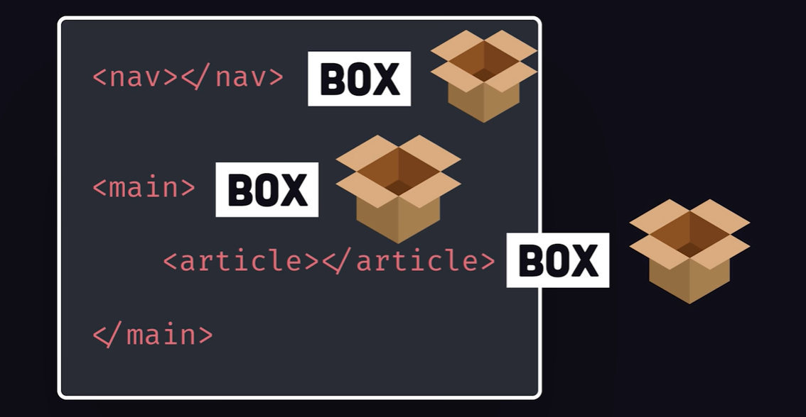
Inside that box, you have the content which have a width and height.
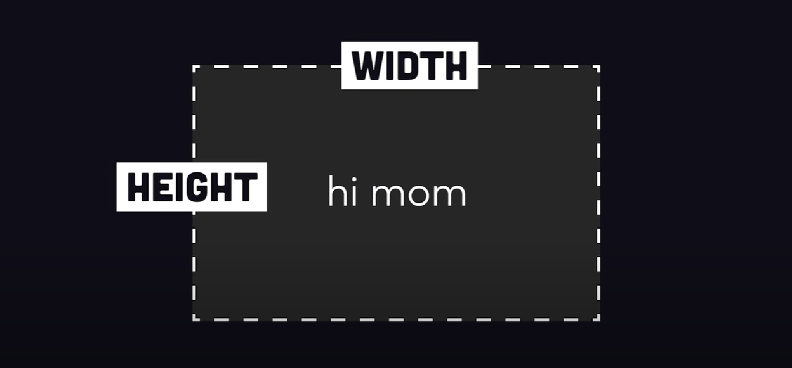
You can add padding around the box to squeeze the content in, then a border around the outside, and then a margin around the border to add more invisible space.
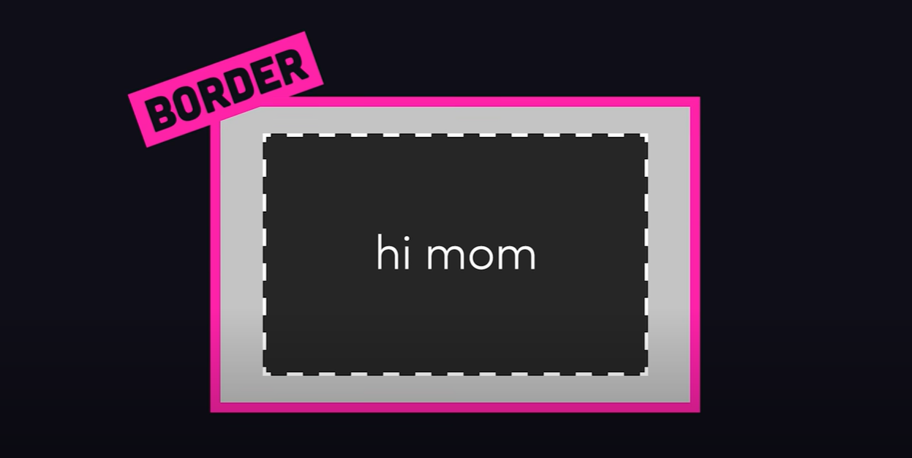
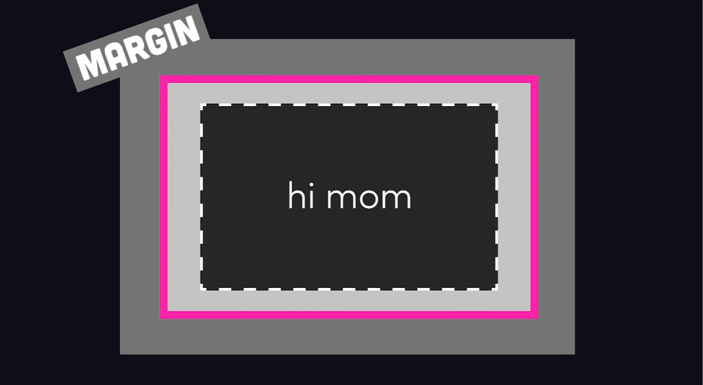
The box model influences everything in CSS that has to do with layout and position. You will see how the box model is computed for every object on the page if you open Chrome dev tools.
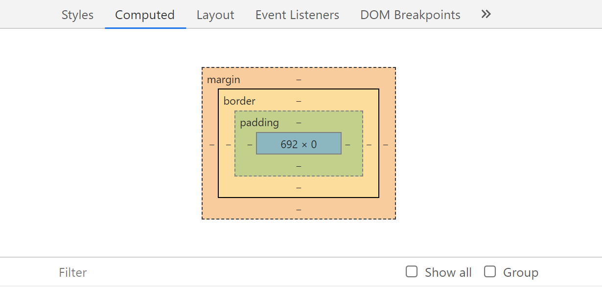
2. Flexbox
Speaking of which layout or the positioning of elements relative to each other has historically been one of the most challenging aspects of CSS. Like the age-old issue of how to horizontally and vertically center a div. One choice is to give the child absolute positioning, then use the top and left properties to shift it to the bottom right corner, then convert it back 50% to place it in the middle. That might work, but it’s counterintuitive.
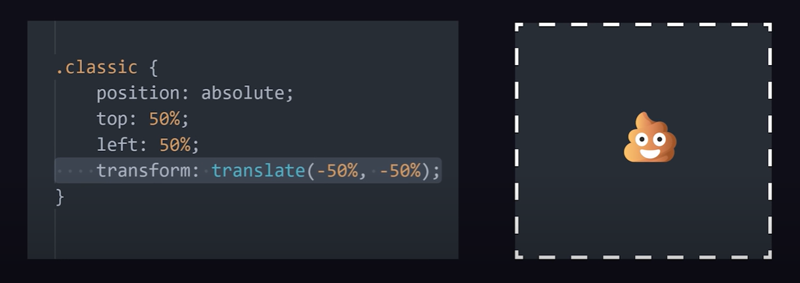
Flexbox, which allows you to build a customizable column or row anywhere in the UI, is a much smarter solution for modern CSS. When an element has display flex, it has an x-axis and a y-axis on which its children can be aligned. The main axis, from which the children flow, can be balanced in the center using the justify-content property. The cross axis is perpendicular to that, and we can use the align-items property to shift our element to the middle.
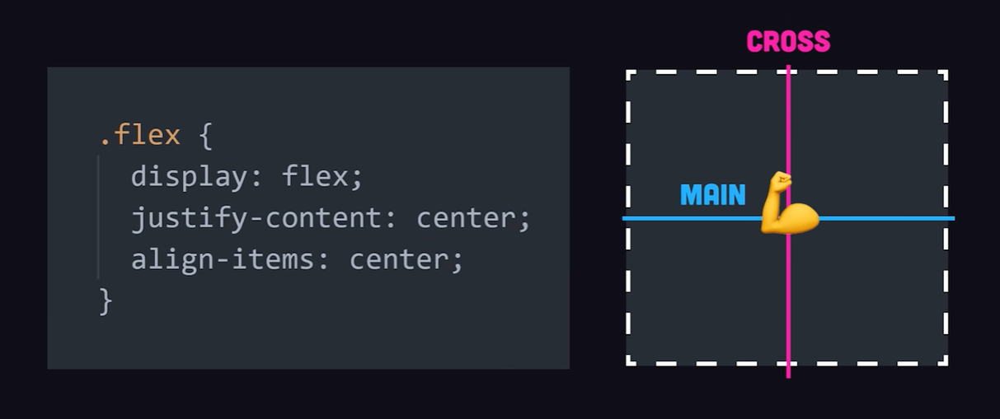
When it comes to layout, flexbox is typically the first tool I aim for. However, if you have a large complex UI with several intersecting rows and columns, you can end up with a large number of container or wrapper elements in your HTML. These elements have no semantic value and are only present so that your CSS code may attach itself.
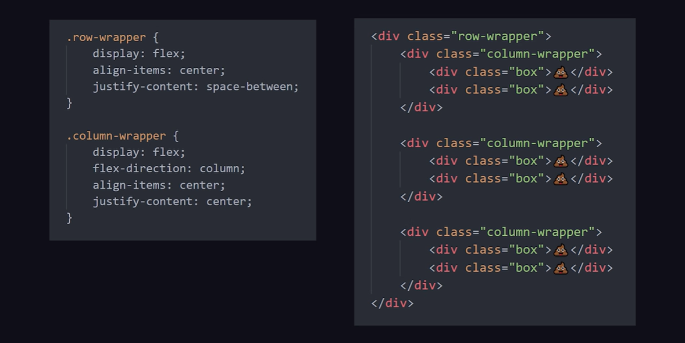
3. Grid
Fortunately, grid, a modern CSS feature, will eliminate a lot of your code. The grid, unlike flexbox, which only considers individual columns and rows, allows you to consider the overall layout. It may look familiar if you’ve been a web developer for a long time because it’s very similar to table layout from back in the day. It’s just much more developer-friendly.
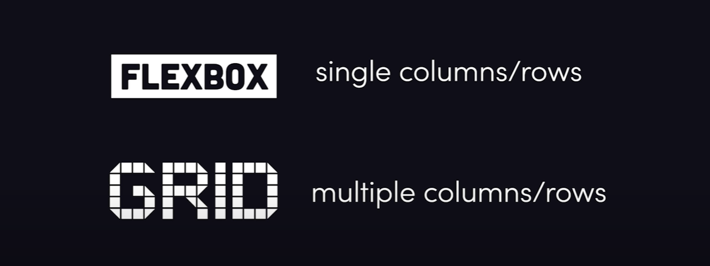
When an element is set to show grid, its children can be described as a collection of columns and rows. The grid-template-columns property can be used to set the width of columns. Our grid has three columns because we have three values separated by spaces.
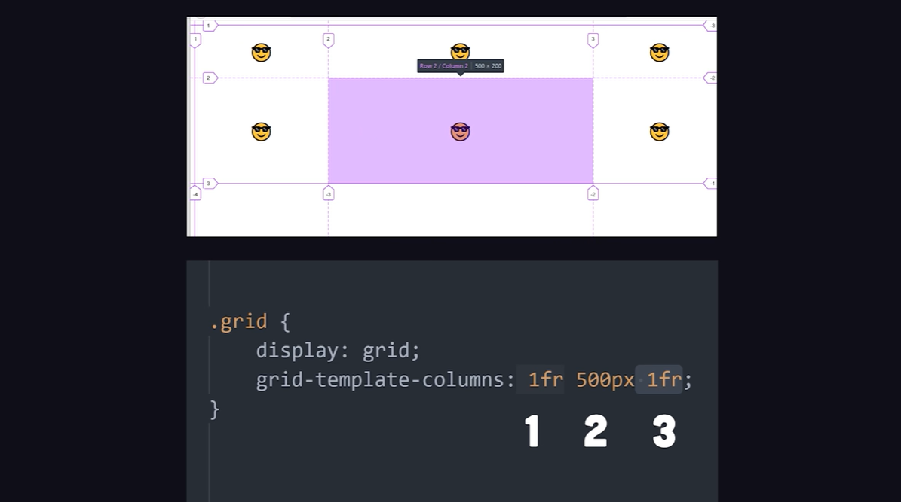
Take note of the fr weight, or fractional unit, which will share available space with other columns in the grid responsibly.
We can also specify some rows, and now every element inside the grid will be automatically positioned. But the most important thing to remember is how little HTML and CSS we’ve used in comparison to flexbox or, god forbid, table layout.
4. Min, Max, Clamp
When we talk about responsive layouts, we’re talking about adjusting the width of something depending on the available space on the screen or viewport 90% of the time. You may do it in a variety of ways. For eg, you can have an article with the desired width of 50 pixels, but you want it set at 200 pixels on small screens or 800 pixels on large screens. You could accomplish this by writing media queries that conditionally apply CSS based on the viewport size.
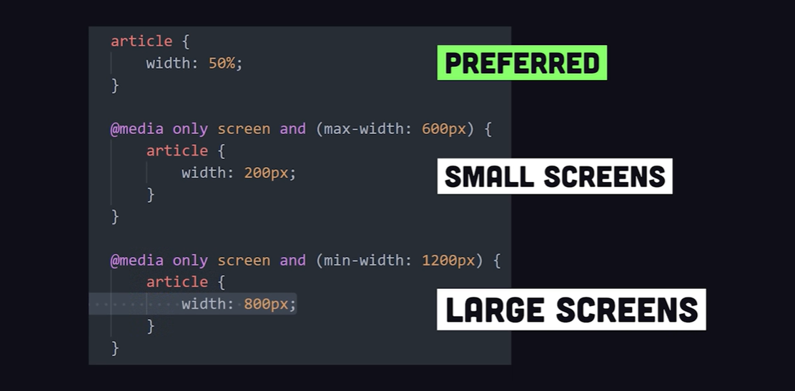
The only problem is that as the project grows bigger, media questions can make you want to destroy yourself. The good news is that you can use functions like min, max, and clamp to turn the tables. For example, we might refactor this code to set the width to a clamped value with a minimum of 200 pixels, a maximum of 600 pixels, and the desired value of 50, resulting in a large amount of code reduction.

5. Aspect Ratio
If you’ve ever had to code a responsive picture or video that retains a certain aspect ratio, you know what I’m talking about. I recently had to do this to embed videos with a 16x9 aspect ratio, which necessitates this hack of 56.25 padding on the top and absolute positioning for the child.
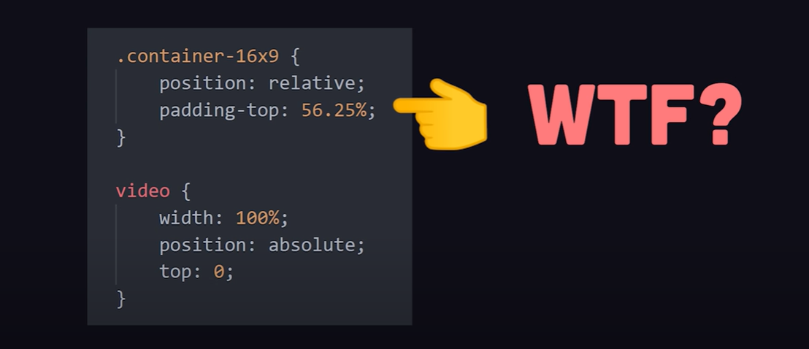
We can use the aspect ratio property today, even though it isn’t supported everywhere. Instead of all that padding, we can simply set the video’s aspect ratio and be done with it.
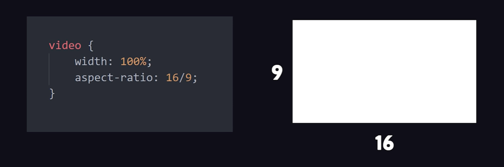
6. Variables
A big part of making it more fun is getting rid of CSS code. Making the code more versatile, though, is equally essential so that refactoring isn’t a complete nightmare. CSS custom properties or variables are a perfect way to accomplish this. Take note of how we’ve used the same color value many times. If we want to change the color, we’ll have to change every line of code that uses it.
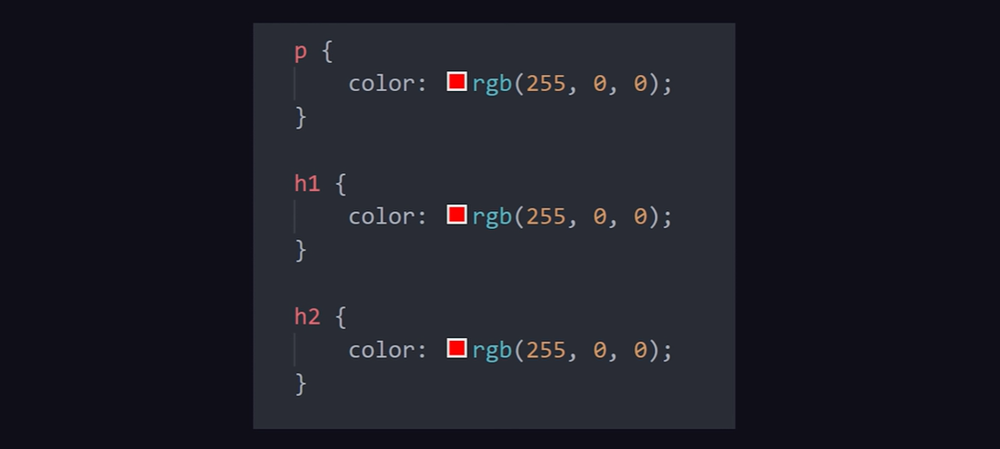
A better solution is to use the root selector to define a global variable that can then be referenced anywhere it’s required. And now, if you want to change it, all you have to do is change one line of code.
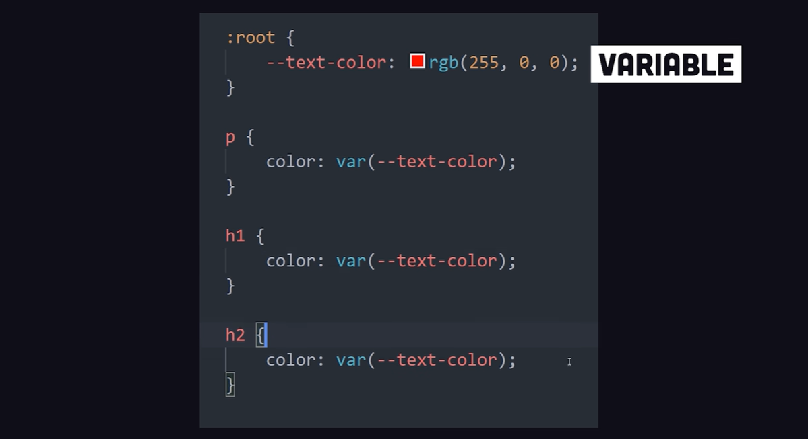
Variables, like everything else in CSS, have a cascade effect, which means you can override them by redefining them further down the tree. You can also use them in combination to create more complex values. For instance, we could base the RGB color on the values of three other variables. And, by allowing you to easily switch out various themes for your website, this versatility can completely transform your life.
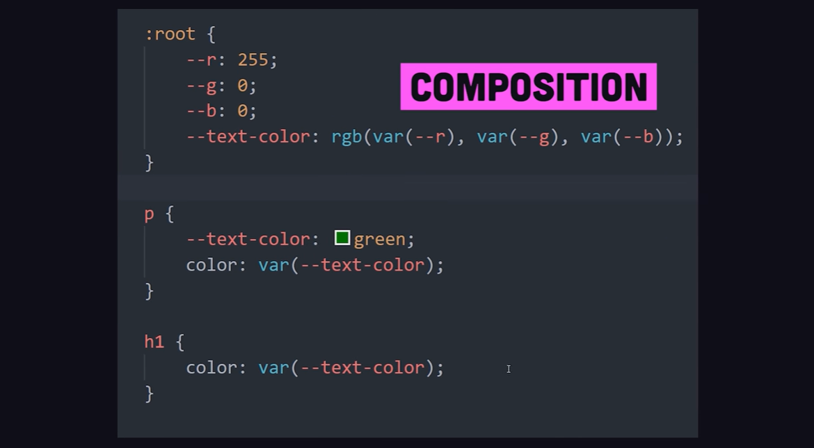
7. Calc() function
In the common sense, CSS is not a programming language. It can, however, use the calc feature to perform simple calculations. It allows you to measure a value using simple arithmetic, but the coolest part is that it allows you to combine different units. For example, you might want to subtract the current viewport width by 50 pixels.
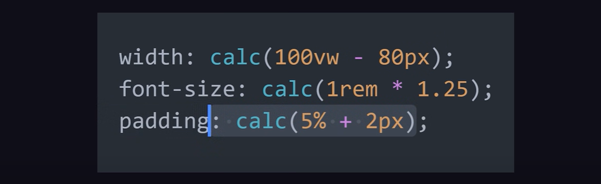
We have an animation in the code where elements drop in from the top, but we want to stagger them so they appear one after the other.
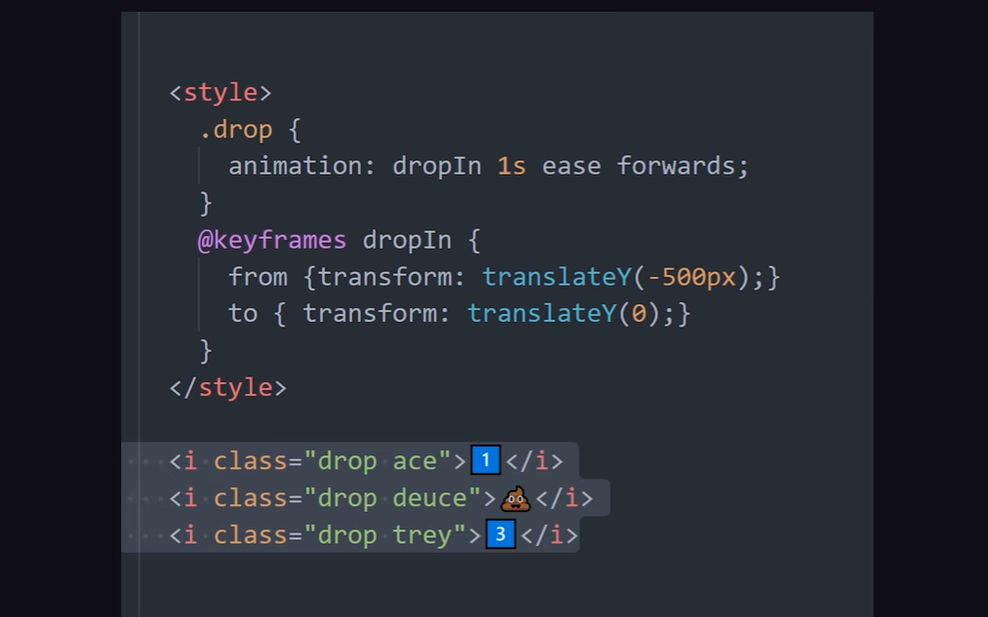
One way to accomplish this is to add a different animation-delay to each element.
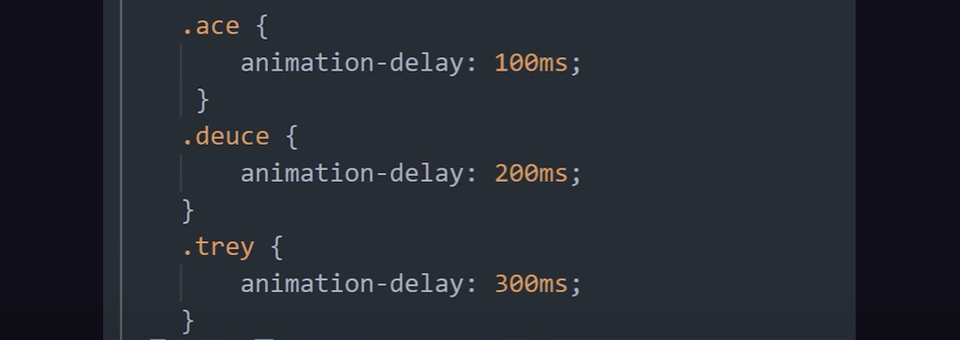
However, this is very repetitive and difficult to refactor. A more advanced approach is to create an inline CSS variable for each object that determines its order, and then define the animation delay as the order variable multiplied by 100 milliseconds.
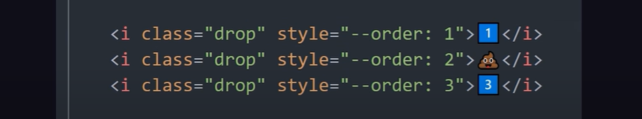
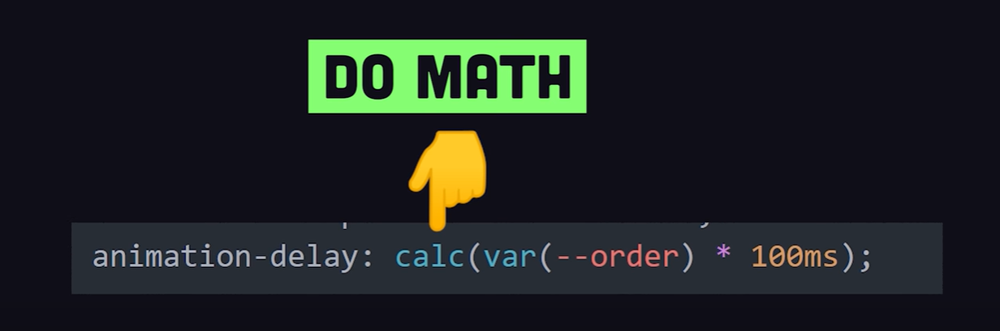
Thanks to the combined powers of calc and variables, we can now manage an infinite number of elements without increasing our CSS footprint.
8. State Management
While I previously mentioned that CSS is not a programming language, did you know that it does provide a state management mechanism? Without writing a single line of javascript, you can keep track of a running count in your CSS code. The naive way to number headings in HTML is to manually add certain numbers in the HTML itself. And you’ll have to manually renumber everything if you ever want to add a new heading.
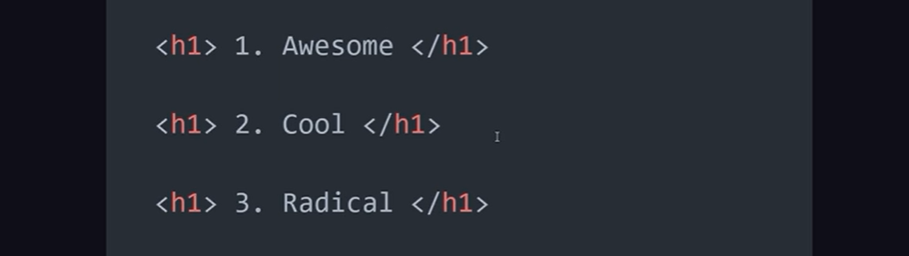
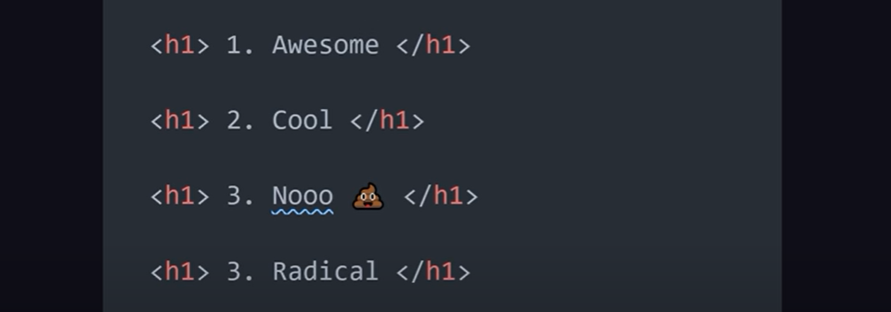
A CSS counter could be a better option. The counter reset property can be used to build a counter in your code. Give it any name you like, and it will be incremented every time the desired selector is used. It’ll start at 0 and increase by one for each h1 factor in the dom.
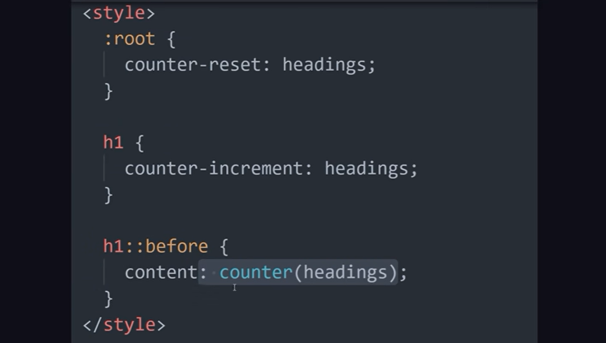
You’ll never have to think about numbers in your HTML again.
9. Focus-within
When creating a complex drop-down menu, you might presume that javascript is used to control the menu’s open and closed states. However, you might be shocked at how far plain CSS will take you. The focus pseudo-class, which is added to an entity when you enter a form input or click a button, is probably familiar to you.
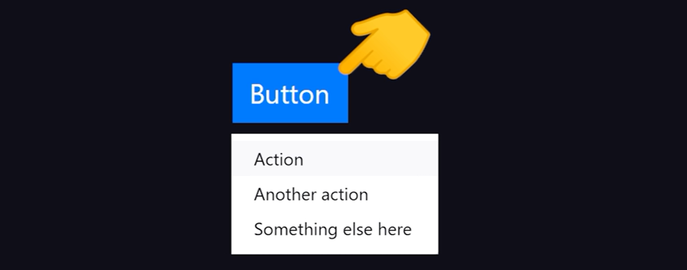
The issue is that you can use focus to open a menu while creating a drop-down, but when you click on something within that menu, it loses focus and closes. That’s when you turn to javascript for state management. There is, however, a pseudo-class called focus-within, which remains active if any of the children still have focus. And that one basic function will get rid of a lot of the javascript that’s used to turn states on and off.
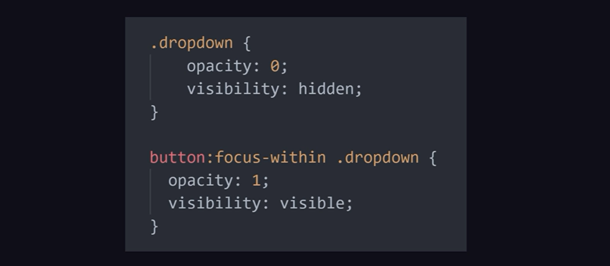
10. Prefixes
Keep these browser vendor prefixes in mind. That things, like herpes, isn’t going away anytime soon.
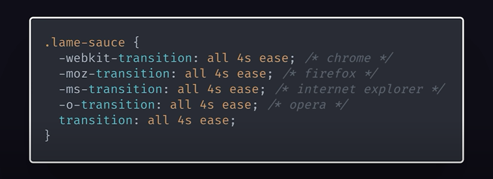
Fortunately, there are powerful medications available that will make it almost invisible. You should be aware of PostCSS, which uses a function called “auto prefixer” to automatically add all vendor prefixes. It also helps you to use modern CSS features even if your target browsers don’t support them.
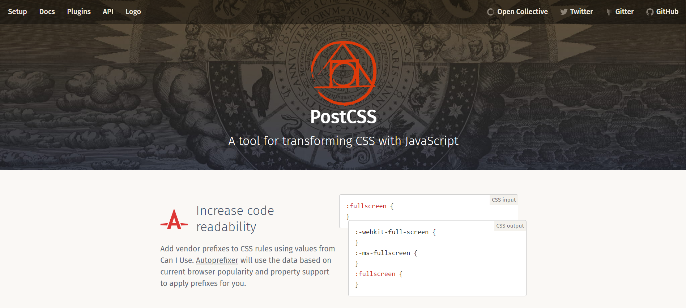
This is the end of this post, hope you enjoyed it!